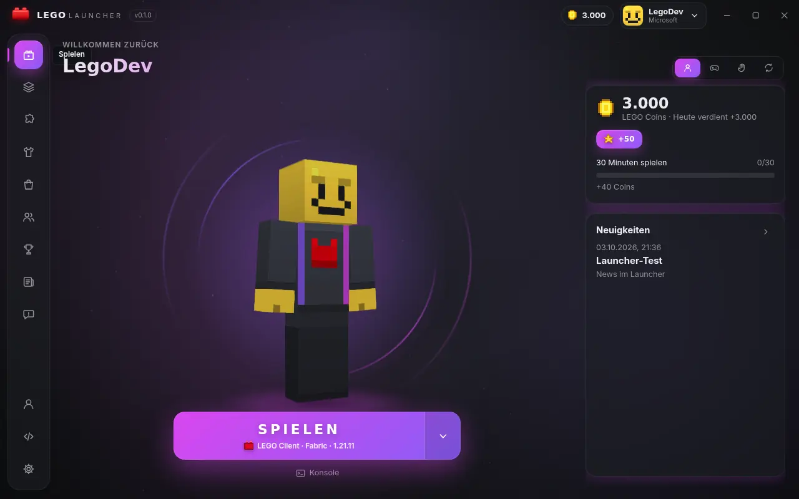
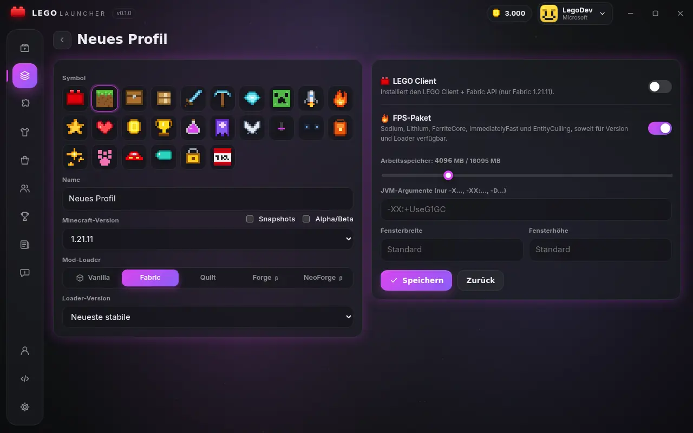
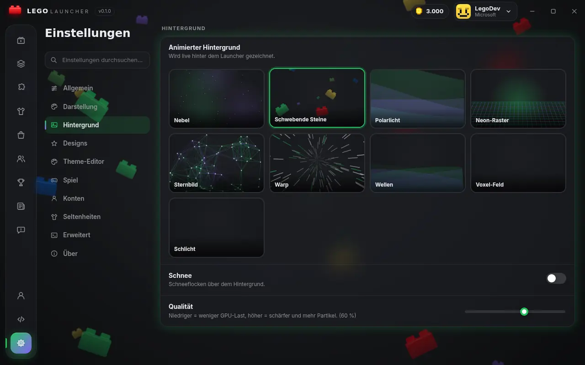
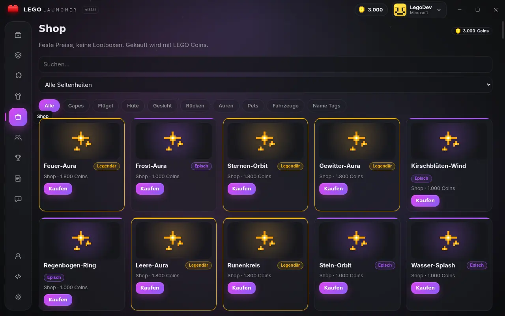

Jede Version
Release, Snapshots und auf Wunsch Alpha/Beta. Java wird passend zur Version automatisch von Mojang installiert.
Ein Launcher für jede Minecraft-Version von 1.8 bis zur neuesten – mit Fabric, Quilt, Forge und NeoForge, Mods und Modpacks von Modrinth, Import aus anderen Launchern und dem LEGO Client.
SHA-256:

Release, Snapshots und auf Wunsch Alpha/Beta. Java wird passend zur Version automatisch von Mojang installiert.
Fabric und Quilt vollständig, Forge und NeoForge über den offiziellen Installer.
Modrinth-Suche direkt im Launcher, Abhängigkeiten werden mitinstalliert, Modpacks als neues Profil.
Profile aus Prism, CurseForge und dem offiziellen Launcher übernehmen – inklusive Configs, Ressourcen- und Shaderpaketen.
Optionales FPS-Paket mit Sodium, Lithium, FerriteCore, ImmediatelyFast und EntityCulling – echte Open-Source-Mods, keine Registry-Tricks.
Cosmetics, Freunde, Chat und Minispiele. Für Spielzeit und Minispiele gibt es LEGO Coins.



Nur über die offizielle Microsoft-Seite. Der Launcher sieht dein Passwort nie, Tokens werden mit der Windows-Verschlüsselung (DPAPI) gespeichert. Der LEGO-Server bekommt dein Minecraft-Token nie.
Jede Datei (Minecraft, Java, Bibliotheken, Mods) wird per SHA-1/SHA-512 geprüft, bevor sie benutzt wird. Nur HTTPS.
Keine Admin-Rechte, keine Registry- oder Dienständerungen, keine Hintergrundprozesse nach dem Beenden.
Neue Programme ohne Code-Signatur-Reputation zeigen manchmal eine SmartScreen-Warnung. Prüfe dann die SHA-256-Prüfsumme oben und die Signatur in den Dateieigenschaften.
Ja. Du meldest dich mit dem Microsoft-Konto an, das Minecraft: Java Edition besitzt. Ohne Kauf ist kein Spielen möglich.
Nein. Der LEGO Launcher ist ein Fan-Projekt und nicht mit Mojang, Microsoft oder der LEGO Group verbunden.
Unsignierte oder sehr neue Installer werden von manchen Scannern heuristisch markiert. Lade nur von dieser Seite oder den GitHub-Releases, vergleiche die SHA-256-Prüfsumme und melde Fehlalarme beim Hersteller. Der Quellcode ist öffentlich.
Im Launcher unter „Feedback“ oder auf der LEGO-Website.